Hi, my name is Mauro, I study computer science at 42school, Paris.
I started programming in 2019 to make games and robots.
While I do love video games, I want to do something more usefull.
This is why, after discovering the precious plastic comunnity, I decided to orient myself toward artificial intelligence.
email: mauroabidal@yahoo.fr
discord: Kantic
Game jam
In March of this year, I participated in a gameJam
organised by Vivatech,
42school
and the Gobelins.
At the beginning of the event, I joined a team and we developped Équilibre ("Balance" in english).
It's a city builder where you have to develop your civilization, while keeping a balance between nature's intergity and human growth. To make clarify, this is not the game we made in two days.
This is the "V2" of the project since we got selected by the jury to present the game at this year's Vivatech event.
Beside the usual gamplay implementation, I worked on two shaders.
One to tell the player that a building can't be built on top of a tile and a dissolve effect.
I know this isn't THE most complex shader ever but it's still cool to look at!
RTS inspired by StarCraft2
During the month of september 2021, I attempted to make an SC2 clone.
An RTS like SC2 requiers a wide variety of functionalities: units behaviours, fog of war, multiplayer, UI, spells implementation.
While I had bitten off more than I could chew and didn't get to finish the project, I did learn to make some interesting functionalities.
Units behaviours
The first functionality to implement, is unit movement.
While the NavMesh Agent Component is very handy, let's say that agents have a tendency to act a little bit... drunk.🍺
For example, if you simply command a group of agents to go to a certain destination,
they will all try to get precisely to that destination and end up spining around it like shown in the first gif.
To fix this, i created a empty list of agents. Whenever an agent arrives at the destination, they get added to the list.
When an agent touches a peer from that list, it stops and gets added to the list thus, preventing the group from spinning.
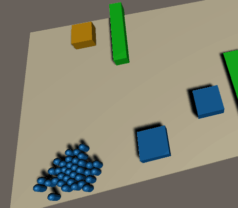
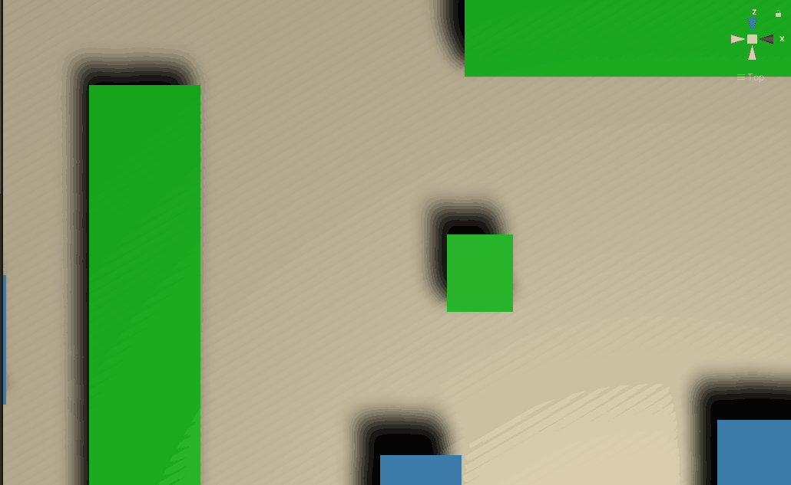
State machines🤖
In order to have entities(units, and buildings) that can execute all sorts of tasks, every entity inherits from a state machine.
It's main properties are:
An Action that defines the current task of the unit is(mining, atticking, ...)
This Action gets called on Update and could be considered as the current state of the machine.
A target and a destination.
The target is another entity(unit/building/ressource) and destination is just a Vector3, they are used by the CurrentTask.
A list of tasks to come once the current one is finished.
The list actually contains structures which in turn, contain an Action that will prepare and then apply, the change of state.
But also the target and the destination for the task.
A Predicate that tells wether the task is done, if it is, the unit fetchs the next task from the list.
This is also part of the state of the machine and gets called just before the current Action.
If the list is empty, the machine returns to a predefined state.
An abstract action to react from the player's orders.
Basically, when the player right clicks on a unit or a location.
The pseudo code would look something like this:
Entity target;
Vector3 destination;
Action currentTask
List nexTasks;
Predicate TaskIsDone;
private void Update()
{
if (taskIsDone())
fetchNewTask();
exeCurrentTask();
}
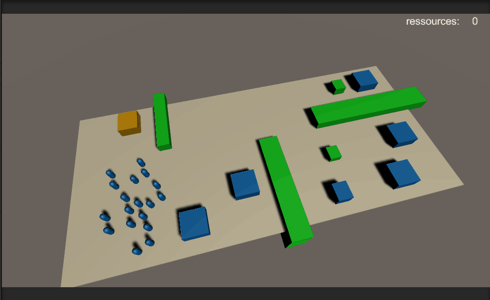
Queueing up tasks(left)Workers choosing what ressource to extract based on number of workers on selected ressource(right)
This simple structures allows for complex behaviours to emmerge.
Lte's take for example the mining behaviours:
The main difficulty I encountered while implementing behaviours, is that the current target(as well as the targets stored in the list),
can get detroyed in battle or disappear in the fog of war.
Keeping the same example as before, if the ressource gets exhausted or the base destroyed, the worker should try to find another ressource or base.
If this is not handled correctly, Unity will do what it does best: throw NullReferenceException Errors.
Implmenting the solution to that problem is what slowed me down the most.
This is what I would refactor if I had to continue working on the project today.
Let's see what I did wrong back then and what I would do today.
To avoid referencing destroyed or hidden targets, each entity has an OnDestroyed CustomEvent(a glorified List of Actions).
Whenever an entity targets a peer, it adds an Action to the target's OnDestroyed CustomEvent.
If the target dies, the event gets called and the entity can react correctly(delete the associated task, find another target, ...)
So far, so good. Now let's image that the entity itself dies before the target does... nothing happens but, once the target dies,
it will Invoke the event and try to call a method of a destroyed entity and then, Unity does what it does best.
To fix this, I added a list of every peer an entity has targeted.
So that when the entity dies, it will unsubscribe from every CustomEvent it was listening to and then invoke its OnDestroy CustomEvent.
So far, so good. But wait, there is more.
Let's imagine now, that the player gives a direct order to the unit(a direct order clears the list of upcomming tasks and changes the current one).
The entity now has to clear itself from all the events it was listening to and clear it's OnDestroy CustomEvent.
Having to handle these lists every time the entity changes state made the solution proune to errors, hard to debug and more complicated than necessary.
What I should have done instead, was to simply check, OnUpdate, if any of the targets has disappeared or died, if so, react accordingly.
That's it! I know it sounds brute force(and it is) but an entity would never have more than 4 or 5 targets at the same time.
Given that there are at worst, 400 units in the game, this gives us in the worst case scenario 2000 checks to performs which is actually not that much for the computer.
Fog of war
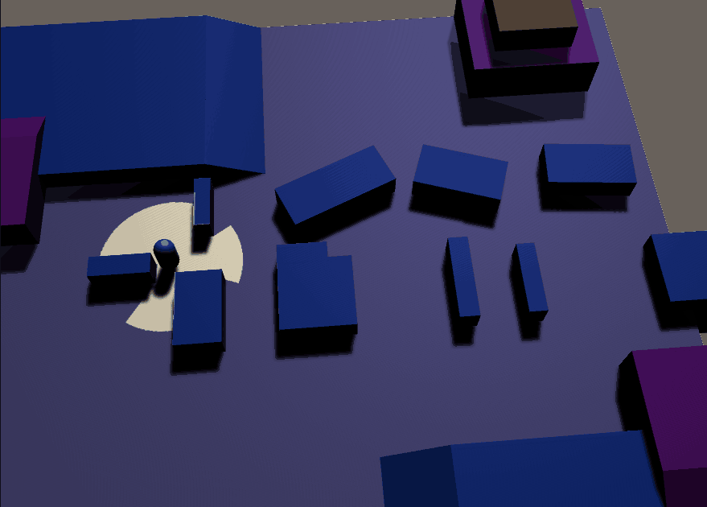
Objectif
Suprisingly enough, fog of war systems are not a very well documented.
There are some tutorials, but they don't give an ideal solution for RTSs.
Before I explain how implemented this functionality, let me clarify what I was trying to do.
The fog of war darkens the part of the maps that are not in sight by ally entities.
It also darkens (a little bit less) the parts that have already been visited but that are not currently in sight.
It also hides enemy entities that are not in sight of allies, but this farily easy to implement,
we'll only focus on the after effect part of the fog.
Here is how I did it.
implementation
The main object in this implementation is a renderTexture containing the informations relative to the fog.
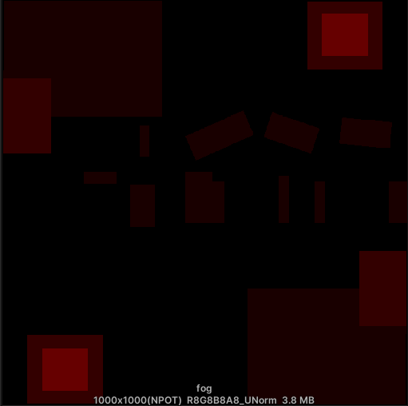
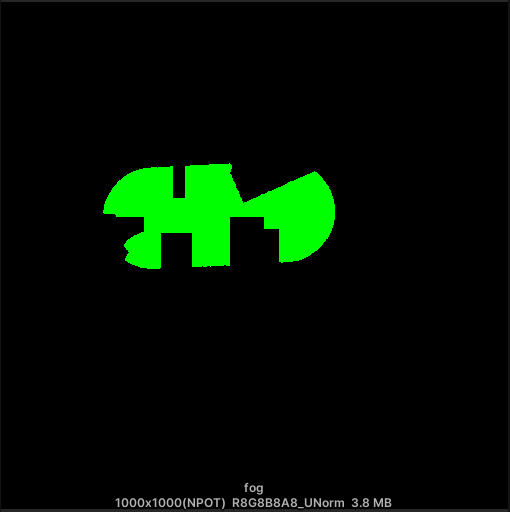
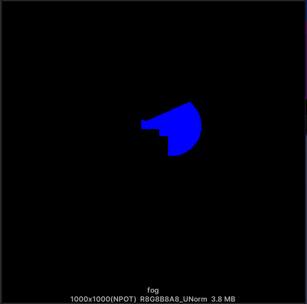
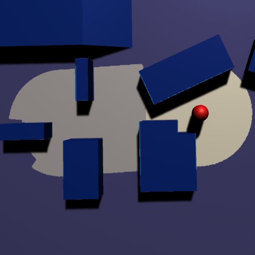
Each channel holds a different type of info:
The red channel holds the height of the terrain (a unit can see the areas in its sight that are below or at the same height).
The green holds the area that has been seen before.
The blue channel holds the area that has ally sights.
Here is the pseudo code of how the texture gets updated:
struct viewPoint
{
vector2 positon;
float viewRadius;
float height;
}
//code for the CPU
void updateFogTex(viewPoint[] viewPoints, RenderTexture fogTex)
{
//buffer that gets passed to the compute shader
ComputeBuffer viewPointsBuffer = new ComputeBuffer(viewPoints.Length, sizeof(viewPoint));
for (int i = 0; i < viewPoints.Length; i++)
viewPointsBuffer[i] = viewPoints[i];
fog.clearVlueChannel();
updateFog(viewPointsBuffer, fog);
viewPointsBuffer.Free();//yes, you need to free computeBuffers
}
//code for GPU, gets run foreach viewPoint at the same time
computeShader updateFog(viewPoint vp, RenderTexture fog)
{
//creates a ray from the position of the viewPoint to the edge of the viewRange
foreach (Vector2 dest in poorlyImplemented_DDA_Circle(vp.viewRadius, vp.position))
{
Vector2[] UVsAlongRay = poorlyImplemented_DDA_Ray(vp.position, dest);
int i = 0;
//check if the view is not beeing blocked by a wall
while (i < UVsAlongRay.Length && fog[UVsAlongRay[i]].r <= vp.height)
{
fog[UVsAlongRay[i]].g = 1;
fog[UVsAlongRay[i]].b = 1;
i++;
}
}
}
The biggest problem of this implementation was performance.
The issue was that every instance of the GPU code had to perform the DDA_ray and DDA_circle to know what pixel to read-write.
To fix this, the the DDA ray and circle results are pre_computed as offsets by the CPU at startup.
The offsets are then applied to the position of the viewPoint By the GPU, to know what pixel to read-write.
And now 400 units(wich is already more than the maximum in SC2), even with the large radii, can be update the the fog at 30Hz while keeping the game at 70fps!
Even though the code is a bit messy, I'm pretty proud of that little trick.
This is somewhat of a wild claim so let me show you a little gif.
Note that the color shifts are due to the gif compression.
Once the texture contains all the needed informations, it's time to actually render the fog.
The first step is to create an albedo/alpha texture based on the fogTexture.
The color is fixed, only the alpha changes depending on the state of the fog:
never seen = almost opaque
seen before = little less opaque
currently being seen = transparent
Then, the texture gets applied to the frame during postprocessing.
Thanks to this tutorial on how to get world coordonates from the camera depth buffer,
I simply need to get the x and z coordonates read from the read pixel of the albedo texture and voilà!
(It was so much easier said than done️️)
UI
To make things clear, I hate UI.
But it is a very important aspect of gameDev, so I try to live with it.
Here is a comparaison with the StarCraft2 UI and mine, it was poorly implemented but at least it worked🤷.
multiplayer
Implementing multiplayer is actually not as complicated as I thought iit would be(when using Photon2).
But it does require to be considered from the beiginning(wich is exactly what I didn't do).
While i did manage to make the multiplayer work(I could creat/join a lobby and interact with enemmy units), I didn't test it properly.
So unfortunatly, I don't have a lot to show on that part of the project🤷.
Real size procedural planet LOD(2020)
Objectif
The goal of the project was to create real size planets that could be visited from space all the way down to the ground without loading times.
The most common process to generate the mesh is as follows:
Make a qudTree on each side of a cube(figure1).
Every quad that is close enough to the player can spawn quad childrens and repeat the recursion until the quads satisfy a certain size given its distance to the player.
Basically the closer the player the smaller the leaves.
Fill in the quads with a grid mesh of fixed vertices count, resized/roatated/translated to the fit in the quad(figure2).
set the vertices equal to their normal multiplied by some noise(figure3).
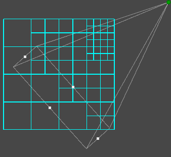
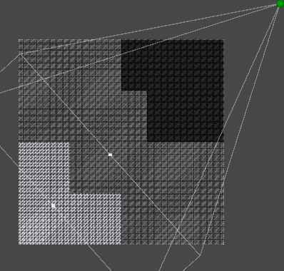
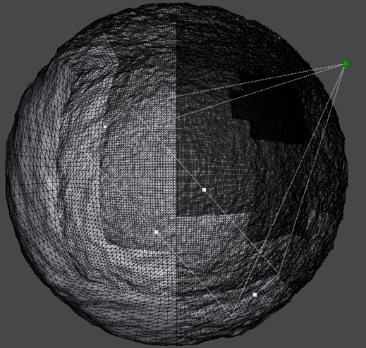
the green point is the view point it hqs a radius of 200 meters
The biggest problem with this method is that it generates seams between leaves of different level of recursion.
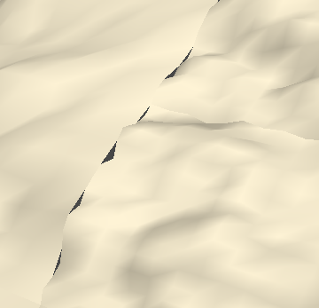
To fix this, I created links btetween adjacent quades/nodes so the leaves could see if there was a differences of recursion with their neighbours.
If so, the leaf with the highest recursion level, would have to lerp some of its side vertices to match the vertices of the neighbour.
This solution is terrible though, because it makes the data structure way more complex than it needs to be and more proune to error.
The second problem, is that the normals where calculated using the RecalculateNormals function.
Wich caused normal seams in between leaves(even if they had the same level of recursion)
To fix this I had to "merge" normals together wich added even more complexity and errors.
The last and most important problem, was that the all the processing was done on a single thread!!!
It should've been ran on the GPU, but at the time I didn't knew how to use shaders.
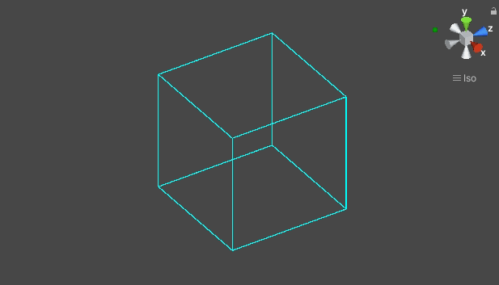
As you can see, there are freezes this is when knew leaves are being created.
Note however that the view Point is moving at 450m/s which is already more thatn the speed of sound(343m/s).
NFT project
Here is a procedural model that changes given the NFT traits of the player.
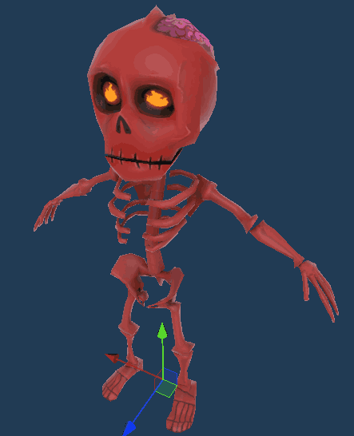
robot
Here is a robot I made in 2019.
The parts are designed on Onshape and 3Dprinted on my ender3.
 In March of this year, I participated in a gameJam
organised by Vivatech,
42school
and the Gobelins.
In March of this year, I participated in a gameJam
organised by Vivatech,
42school
and the Gobelins. Beside the usual gamplay implementation,
Beside the usual gamplay implementation, 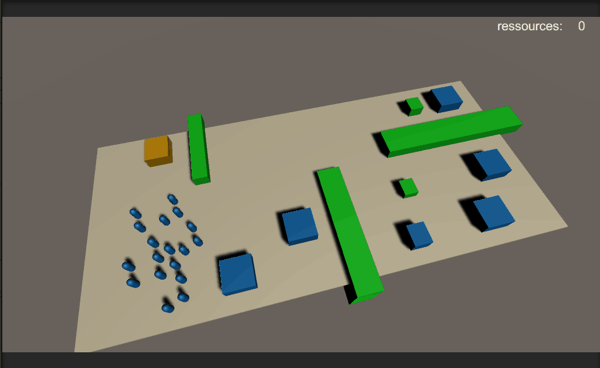
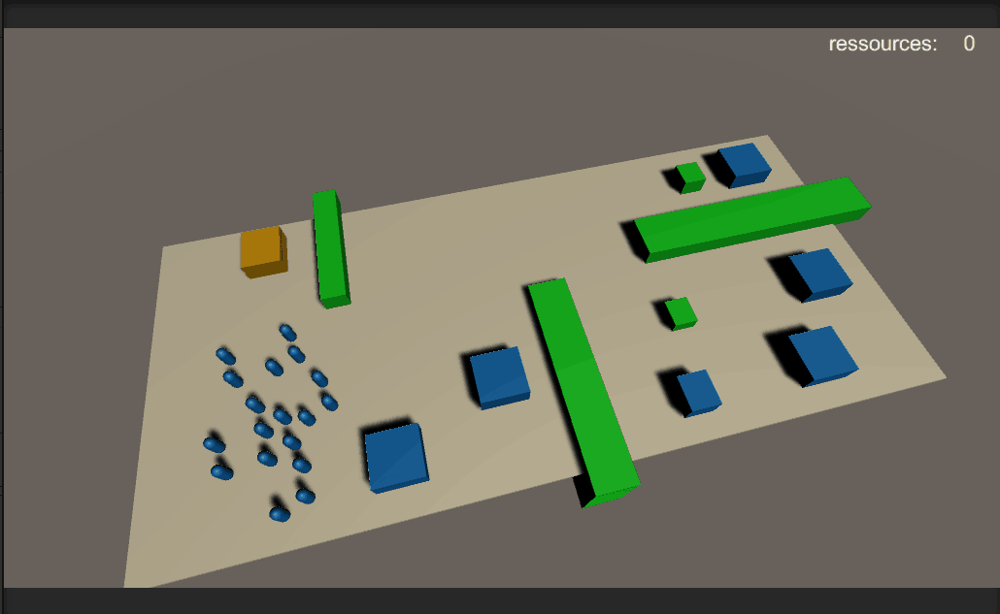


 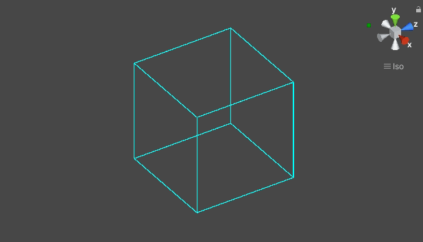
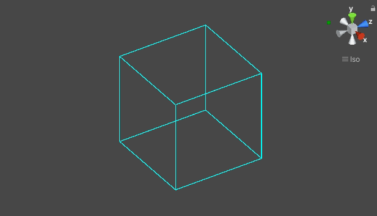